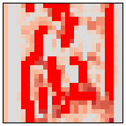

from typing import Tuple
import torch, torch.utils.data, torch.nn as nn, torch.nn.functional as F
import torchvision.transforms as T
from torchvision.datasets import ImageNet
from torchvision.models import vgg16, VGG16_Weights, vgg11, VGG11_Weights, alexnet, AlexNet_Weights
from lovely_tensors import monkey_patch
from torchinfo import summaryImplementation
monkey_patch()Load some images
in_stats = ( (0.485, 0.456, 0.406), # mean
(0.229, 0.224, 0.225) ) # std
tfms = T.Compose([
T.Resize((224, 224)),
T.ToTensor(),
T.Normalize(mean=in_stats[0], std=in_stats[1])
])
train = ImageNet(root="~/work/datasets/ImageNet", split="train", transform=tfms)
val = ImageNet(root="~/work/datasets/ImageNet", split="val", transform=tfms)image, label = train[0]
print(f"Label: {label} Image: {image}")
image.rgb(denorm=in_stats)Label: 0 Image: tensor[3, 224, 224] n=150528 x∈[-2.101, 2.640] μ=0.125 σ=1.512Confirm it works. The image belongs to class 0 - tench (a fish species)
(alexnet(weights=AlexNet_Weights.DEFAULT)
.requires_grad_(False)
.eval()(image[None])[0].argmax().item()
)0Load and hook into AlexNet
- Load AlexNet (the one from the “This one weird trick” paper, not the OG one Z&F used)
- Convert ReLu and Dropout to not be in-place.
# The feature extractor part of the model
f: nn.Sequential = alexnet(weights=AlexNet_Weights.DEFAULT).features
f.requires_grad_(False).eval()
for l in f:
# Disable inplace for ReLU and Dropout.
# Otherwise they overwrite the previous layers output.
if hasattr(l, "inplace"):
l.inplace = False
fSequential(
(0): Conv2d(3, 64, kernel_size=(11, 11), stride=(4, 4), padding=(2, 2))
(1): ReLU()
(2): MaxPool2d(kernel_size=3, stride=2, padding=0, dilation=1, ceil_mode=False)
(3): Conv2d(64, 192, kernel_size=(5, 5), stride=(1, 1), padding=(2, 2))
(4): ReLU()
(5): MaxPool2d(kernel_size=3, stride=2, padding=0, dilation=1, ceil_mode=False)
(6): Conv2d(192, 384, kernel_size=(3, 3), stride=(1, 1), padding=(1, 1))
(7): ReLU()
(8): Conv2d(384, 256, kernel_size=(3, 3), stride=(1, 1), padding=(1, 1))
(9): ReLU()
(10): Conv2d(256, 256, kernel_size=(3, 3), stride=(1, 1), padding=(1, 1))
(11): ReLU()
(12): MaxPool2d(kernel_size=3, stride=2, padding=0, dilation=1, ceil_mode=False)
)Visualizing the weights of the first Conv layer.
Scale so that most (+/- 3σ) RGB values are in [0..1], clip the rest.
w1 = f[0].weight
w1.pltdef sigmas(x: torch.Tensor, n=3):
x /= x.std()*n*2 # *2 because I want +/- n sigmas
return x - x.mean() + 0.5sigmas(w1).pltsigmas(w1).clip(0, 1).rgb(gutter_px=0, scale=5)Explore the activations
Hook into activations
- Attach a hook that saves every modules input and output
- Run 1 image through the model to save in/out values for every layer.
def save_hook(m: nn.Module, i: Tuple[torch.Tensor], o: torch.Tensor):
m.inp = i[0] # torch passses a tuple because that's how forward() works in general.
m.out = o
for l in f:
if not hasattr(l, "hooked"):
l.register_forward_hook(save_hook)
l.hooked=True
f(image[None]) # Outputs 6x6x256 feature map, but we only care about the layer activations.tensor[1, 256, 6, 6] n=9216 x∈[0., 24.330] μ=0.619 σ=1.803- Layer activations
for i, l in enumerate(f):
print(f"{i}: {l}")
if not i: print(f"\tIn: {l.inp}") # For other layers, input=previous layers output.
print(f"\tOut: {l.out}")0: Conv2d(3, 64, kernel_size=(11, 11), stride=(4, 4), padding=(2, 2))
In: tensor[1, 3, 224, 224] n=150528 x∈[-2.101, 2.640] μ=0.125 σ=1.512
Out: tensor[1, 64, 55, 55] n=193600 x∈[-34.649, 32.174] μ=-0.398 σ=3.305
1: ReLU()
Out: tensor[1, 64, 55, 55] n=193600 x∈[0., 32.174] μ=0.718 σ=1.886
2: MaxPool2d(kernel_size=3, stride=2, padding=0, dilation=1, ceil_mode=False)
Out: tensor[1, 64, 27, 27] n=46656 x∈[0., 32.174] μ=1.977 σ=2.887
3: Conv2d(64, 192, kernel_size=(5, 5), stride=(1, 1), padding=(2, 2))
Out: tensor[1, 192, 27, 27] n=139968 x∈[-168.725, 60.178] μ=-9.465 σ=13.468
4: ReLU()
Out: tensor[1, 192, 27, 27] n=139968 x∈[0., 60.178] μ=0.836 σ=2.859
5: MaxPool2d(kernel_size=3, stride=2, padding=0, dilation=1, ceil_mode=False)
Out: tensor[1, 192, 13, 13] n=32448 x∈[0., 60.178] μ=2.660 σ=4.923
6: Conv2d(192, 384, kernel_size=(3, 3), stride=(1, 1), padding=(1, 1))
Out: tensor[1, 384, 13, 13] n=64896 x∈[-93.757, 47.511] μ=-13.378 σ=14.596
7: ReLU()
Out: tensor[1, 384, 13, 13] n=64896 x∈[0., 47.511] μ=0.887 σ=2.976
8: Conv2d(384, 256, kernel_size=(3, 3), stride=(1, 1), padding=(1, 1))
Out: tensor[1, 256, 13, 13] n=43264 x∈[-59.236, 44.692] μ=-9.512 σ=9.022
9: ReLU()
Out: tensor[1, 256, 13, 13] n=43264 x∈[0., 44.692] μ=0.583 σ=2.167
10: Conv2d(256, 256, kernel_size=(3, 3), stride=(1, 1), padding=(1, 1))
Out: tensor[1, 256, 13, 13] n=43264 x∈[-43.151, 24.330] μ=-6.892 σ=5.207
11: ReLU()
Out: tensor[1, 256, 13, 13] n=43264 x∈[0., 24.330] μ=0.168 σ=0.939
12: MaxPool2d(kernel_size=3, stride=2, padding=0, dilation=1, ceil_mode=False)
Out: tensor[1, 256, 6, 6] n=9216 x∈[0., 24.330] μ=0.619 σ=1.803Explore the first Conv block (Conv-ReLu-MaxPool)
pool_idxs = [ i for i in range(len(f)) if isinstance(f[i], nn.MaxPool2d) ]
pool_idxs[2, 5, 12]c1 = f[pool_idxs[0]-2] # Conv 1
r1 = f[pool_idxs[0]-1] # ReLU 1
m1 = f[pool_idxs[0]] # MaxPool 1Convolution input
c1.inp.plt
Note the 3 pillars on the right. It’s the white margins that are part of the image.
R, G and B channels are normalized with slightly different values, so you see 3 pillars
instead of one at max.
sigmas(c1.inp, 2).chansConvolution output
sigmas(c1.out, n=1).chans(scale=2)I see a lot of edge detectors, and a bunch of other things.
def pos_sigmas(x: torch.Tensor, n=2):
"Give n an input of non-negative numbers, rescale it fit nσ into [0..1] range"
return x / (n * (x[ x> 0 ].std()))ReLu output
(pos_sigmas(r1.out, n=2) + 0.5).chans(scale=2)(pos_sigmas(r1.out[0,4,:], n=4) + 0.5).chans(scale=10) # A wide edge detectorAfter MaxPool. Note that a lot fewer pixels are zero / close to zero.
(pos_sigmas(m1.out, n=2) + 0.5).chans(scale=2)DeconvNet
- Get the indices of the values that went through MaxPool
idx_max_pool2d = nn.MaxPool2d(kernel_size=3, stride=2, return_indices=True)
_, m1_switch = idx_max_pool2d(m1.inp) # Returns tuple (maxs, max_idxs)
m1_switchtensor[1, 64, 27, 27] n=46656 x∈[0., 3.024e+03] μ=1.499e+03 σ=859.119 i64torch.set_printoptions(linewidth=120)
m1_switch[0,0,:16,:16].v # Top left cornertensor[16, 16] n=256 x∈[2.000, 1.792e+03] μ=873.312 σ=510.421 i64
tensor([[ 55, 2, 4, 63, 64, 10, 69, 125, 17, 20, 20, 23, 26, 26, 29, 30],
[ 110, 112, 114, 227, 229, 177, 179, 125, 126, 183, 187, 187, 134, 137, 138, 141],
[ 220, 222, 224, 227, 229, 287, 287, 290, 237, 293, 242, 242, 244, 246, 248, 307],
[ 330, 332, 334, 448, 449, 340, 342, 456, 457, 348, 350, 352, 466, 467, 468, 472],
[ 440, 442, 444, 448, 449, 450, 509, 510, 511, 570, 572, 572, 576, 576, 580, 527],
[ 550, 552, 554, 668, 668, 671, 672, 675, 678, 624, 572, 572, 576, 576, 635, 635],
[ 660, 662, 664, 777, 668, 671, 672, 786, 678, 678, 680, 682, 684, 686, 745, 745],
[ 770, 772, 774, 777, 778, 780, 839, 786, 786, 788, 790, 792, 794, 908, 908, 800],
[ 880, 882, 884, 998, 998, 1001, 1004, 896, 896, 898, 900, 902, 904, 908, 908, 1020],
[ 990, 992, 994, 998, 998, 1001, 1004, 1116, 1116, 1008, 1010, 1012, 1014, 1017, 1073, 1020],
[1100, 1102, 1104, 1217, 1163, 1167, 1168, 1226, 1226, 1230, 1230, 1122, 1124, 1127, 1128, 1130],
[1210, 1212, 1214, 1217, 1328, 1220, 1224, 1226, 1226, 1230, 1230, 1232, 1290, 1236, 1238, 1352],
[1320, 1322, 1324, 1328, 1328, 1387, 1388, 1391, 1391, 1338, 1452, 1452, 1399, 1346, 1348, 1407],
[1430, 1432, 1434, 1436, 1438, 1497, 1497, 1444, 1446, 1448, 1507, 1507, 1454, 1456, 1570, 1462],
[1540, 1542, 1544, 1603, 1603, 1662, 1662, 1554, 1556, 1670, 1672, 1672, 1676, 1676, 1570, 1627],
[1650, 1652, 1654, 1767, 1659, 1662, 1662, 1664, 1666, 1780, 1780, 1672, 1676, 1676, 1678, 1792]])unpool_2d = nn.MaxUnpool2d(kernel_size=3, stride=2)
unpooled_m1_inp = unpool_2d(m1.out, m1_switch)
unpooled_m1_inp.plt(plt0=0)(pos_sigmas(unpooled_m1_inp, n=2)+0.5).chans(pos_sigmas(unpooled_m1_inp[0,4]) + 0.5).chans(scale=5)(pos_sigmas(m1.inp[0,4]) + 0.5).chans(scale=5)(pos_sigmas(m1.out[0,4]) + 0.5).chans(scale=5)
(idx_max_pool2d(unpooled_m1_inp)[0] == m1.out).all().item()TrueI seems to work. It looks a bit sparse because the Pool kernel=2 and stride=2.
If an input pixel has a high activation, it will zero out all pixels in a 5x5 pixel square.